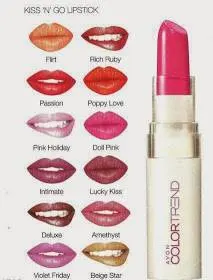
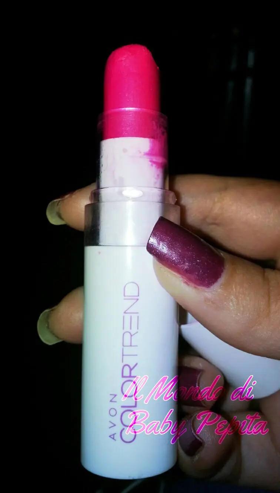
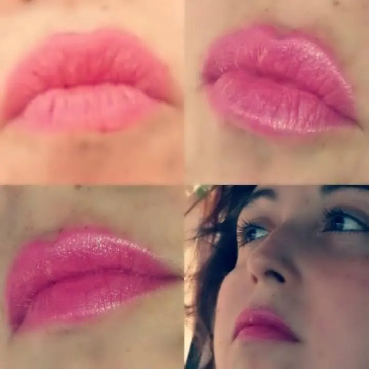

Avon - Rossetto Color trend - kiss’n’go - doll pink
✦ ❀ ✦
Ritorniamo a parlare del brand Avon.
Sapete che uso questo marchio molto volentieri e questa volta parliamo di un rossetto dal colore fresco.
Linea Color Trend - Kiss 'n' Go
Colore: Doll pink
Iniziamo col dire che questa linea ci regala ben 12 tonalità, tutti colori frizzanti e ottimi sia per l'inverno che per l'estate.

Oggi ho provato per l'appunto il doll pink

Un fucsia satin molto pigmentato. Adattissimo per le belle giornate estive, anche se a dire il vero anche d'inverno con un makeup nude sugli occhi questo colore sulle labbra fa la sua bella figura.
Il mio ormai è anche un pò consumato e questo dov uto anche al fatto che ahimè l'ho trovato reduce di due nipotine piccole, quindi vi lascio immaginare, ma per mia fortuna è ancora qui sano e salvo.
Ha una bella durata di almeno 4 - 5 ore ed è sempre brillante.
Morbido e soprattutto, cosa molto importante non secca le labbra ma anzi le idrata anche un pò, tenendole morbide al punto giusto.

Questo è l'effetto che fa su di me.
PS. non mi sono concentrata a metterlo ma l'ho messo di fretta e fuori che ero in ritardo quindi passando una sola volta il rossetto sulle labbra. Vi posso garantire che con una seconda passata diventa anche più acceso ed è bellissimo da portare soprattutto di sera.
Prezzo al momento: 2,95 € per 3, 6 g
INCI: Ricinus Communis (Castor) Seed Oil, Petrolatum,Parfum, Isopropyl Palmitate, Caprylic/Capric Triglyceride, Polybutene, Microcrystalline Wax, Ozokerite, Cetyl Ricinoleate, Ethylhexyl Hydroxystearate, Hydrogenated Castor Oil, Lanolin, Ethylhexyl Methoxycinnamate, Benzophenone-3, Polyethylene, Triisostearyl Citrate, Myristyl Lactate, Caprylyl Glycol, Tocopheryl Acetate, Acrylates Copolymer, Silica. [+/-: CI 77019, CI 77891, CI 15850, CI 77120, CI 77491, CI 77492, CI 77499, CI 42090, CI 45380, CI 15850, CI 15850, CI 19140, CI 45410, CI 15985, CI 17200, CI 45380].
Beh, se avete amiche presentatrici vi consiglio di acquistarlo, a me piace molto.